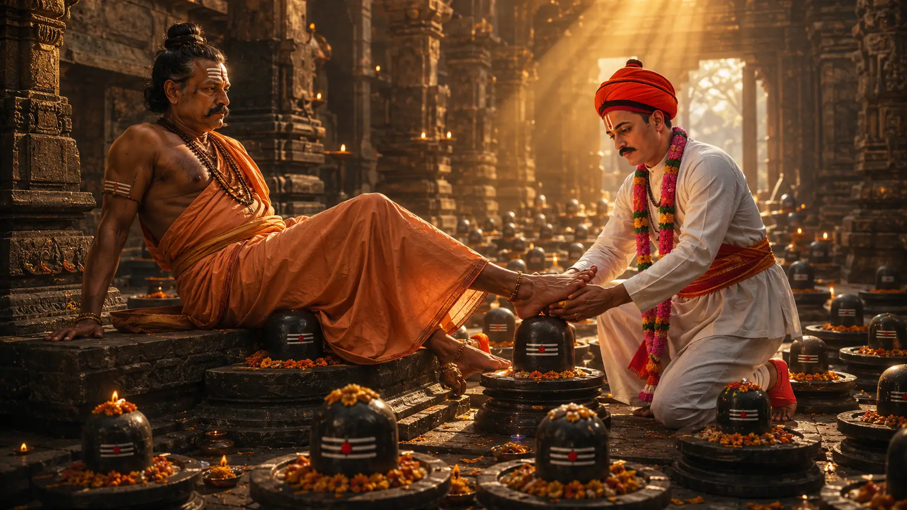
संत नामदेव आणि विसोबा खेचर यांची ऐतिहासिक भेट: सगुणातून निर्गुणाकडे
सगुण भक्तीकडून निर्गुण आणि चराचरात विठ्ठल पाहण्याची दृष्टी नामदेवांना कशी मिळाली, त्या भेटीचा अद्भूत प्रसंग...
पूर्ण कथा वाचा ➔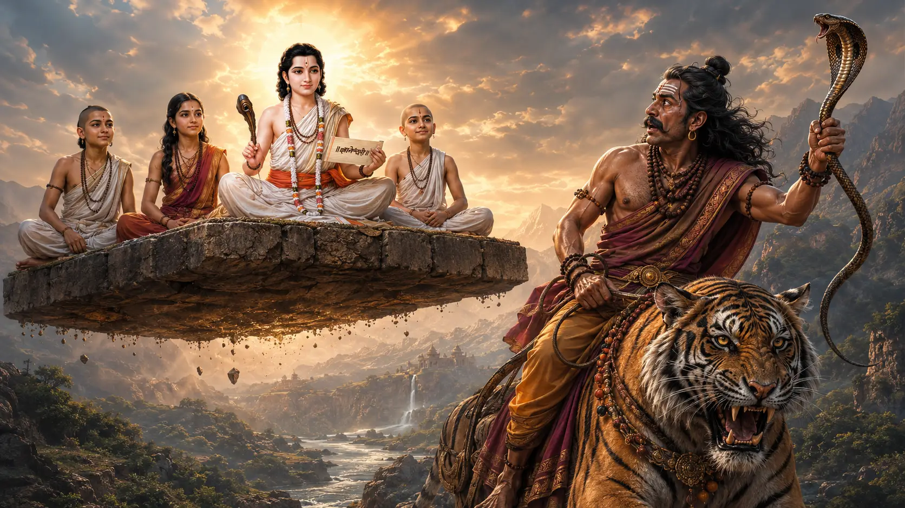
संत चांगदेव आणि संत ज्ञानेश्वर महाराज यांच्यातील अद्वितीय प्रसंग
चौदाशे वर्षे आयुष्य असणारे योगी चांगदेव जेव्हा वाघावर बसून आले आणि माउलींनी भिंत चालवली, तो अहंकार मुक्तीचा सोहळा...
पूर्ण कथा वाचा ➔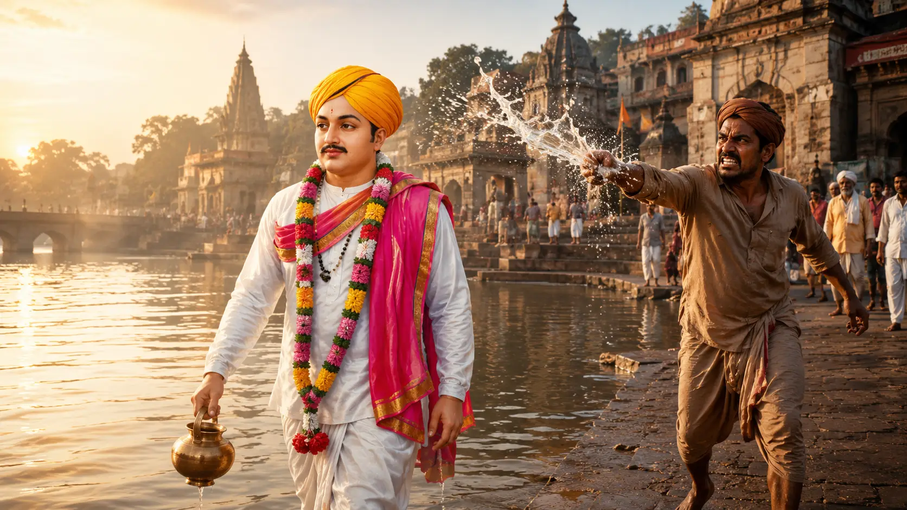
संत एकनाथ महाराज : क्षमेचा आदर्श आणि प्रेरणादायी प्रसंग
नदीवरून स्नान करून येताना अंगावर थुंकणाऱ्या व्यक्तीलाही आपल्या शांत आणि क्षमाशील स्वभावाने बदलणारा नाथांचा दिव्य प्रसंग...
पूर्ण कथा वाचा ➔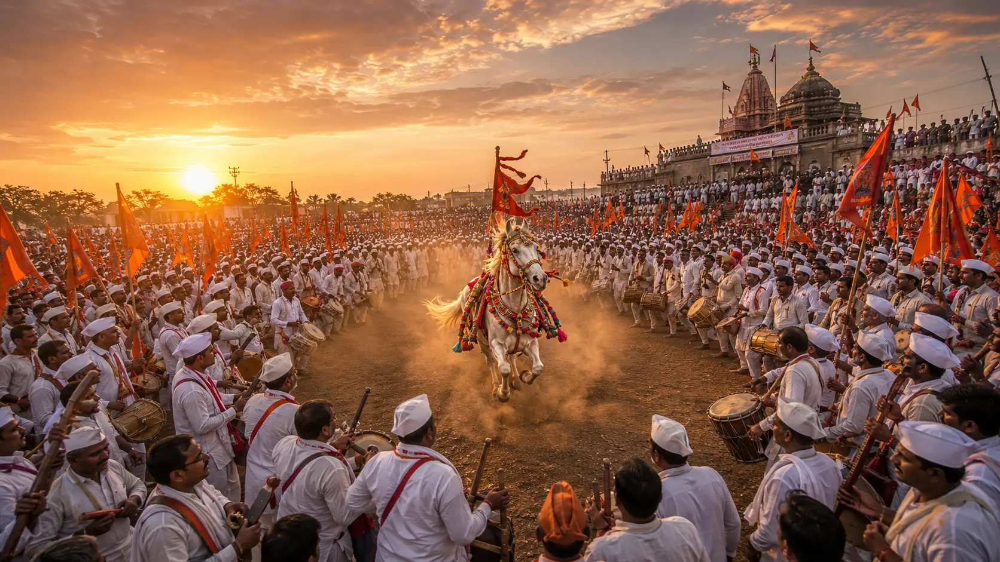
पंढरपूरची वारी: एक हरिमय परंपरा आणि सांस्कृतिक वैभव
भक्ती, रिंगण, टाळ-मृदंगाचा गजर आणि लक्षावधी वैष्णवांचा मेळा असलेल्या आषाढी वारीचे अनुपमेय दर्शन...
पूर्ण कथा वाचा ➔
पुंडलिक चरित्र व विठोबा प्रकट कथा | मातृ-पितृ भक्तीचा सर्वोच्च आदर्श
भक्त पुंडलिकाच्या सेवेवर प्रसन्न होऊन युगे अठ्ठावीस विटेवर उभा राहणाऱ्या पांडुरंगाची मुख्य प्राकट्य कथा...
पूर्ण कथा वाचा ➔
संत मुक्ताबाई आणि योगी चांगदेव यांची ऐतिहासिक भेट
कोऱ्या पत्राचे मर्म सांगून वयाच्या अवघ्या लहान वयात मुक्ताबाईंनी योगी चांगदेवांना दिलेला अमूल्य आत्मबोध...
पूर्ण कथा वाचा ➔
संत तुकाराम आणि उसाची मोळी : करुणा आणि त्यागाचा प्रसंग
शेतातून आणलेल्या उसाची मोळी वाटेत गरिबांना वाटून, घरी उरलेला ऊस देखील आनंदाने देणाऱ्या तुकोबांची अथांग करुणा...
पूर्ण कथा वाचा ➔
एक दिवसाचा पांडुरंग - भक्तीमय प्रेरणादायक कथा
हृदयाला स्पर्श करणारी आणि निस्सीम भक्तीचा महिमा पटवून देणारी एक सुंदर प्रेरणादायी आध्यात्मिक बोधकथा...
पूर्ण कथा वाचा ➔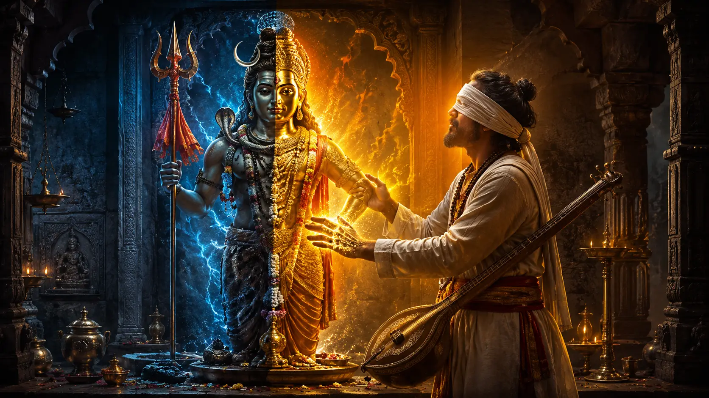
संत नरहरी सोनार यांचा हरि-हर साक्षात्कार – भक्ती आणि आत्मबोध
शिव आणि विठ्ठल एकच आहेत हा दिव्य साक्षात्कार जेव्हा नरहरी सोनार यांना डोळ्यावर पट्टी बांधून विठ्ठल मूर्तीला स्पर्श करताना झाला...
पूर्ण कथा वाचा ➔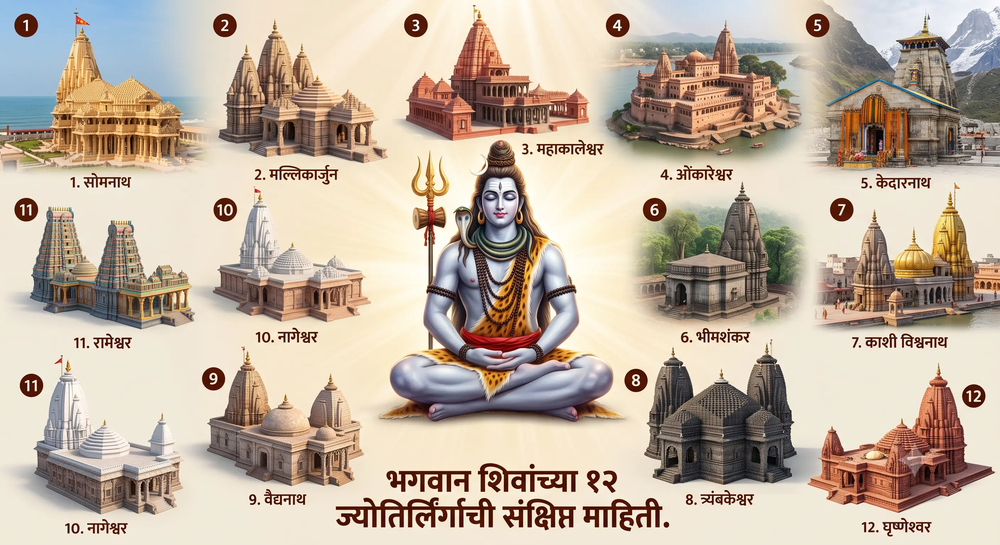
भारतातील १२ पवित्र ज्योतिर्लिंगे: संपूर्ण इतिहास, कथा आणि दर्शन मार्ग
भगवान शिवाच्या सोमनाथ ते घृष्णेश्वर या १२ पावन ज्योतिर्लिंगांची सविस्तर पौराणिक कथा, इतिहास, आरती वेळा आणि यात्रा मार्गदर्शिका एकाच ठिकाणी वाचा...
संपूर्ण १२ ज्योतिर्लिंग दर्शन ➔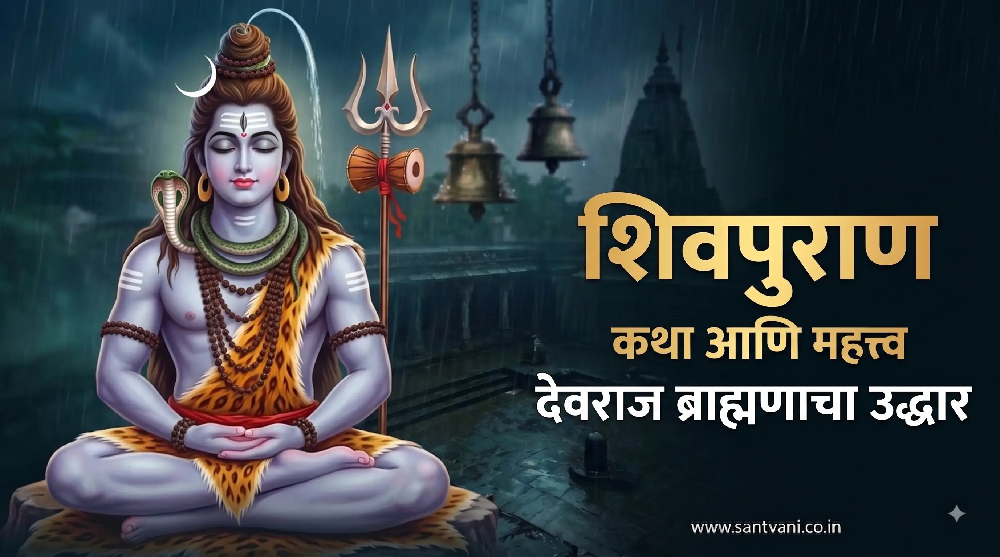
देवराज ब्राह्मणाचा उद्धार: शिवपुराण कथेचे अद्भुत महात्म्य व फलश्रुती
शिवपुराण श्रवणाने पातकी देवराज ब्राह्मणाचा कसा उद्धार झाला आणि शिवकथेचे अगाध महिमा व फलश्रुती काय आहे, याची सविस्तर कथा...
पूर्ण कथा वाचा ➔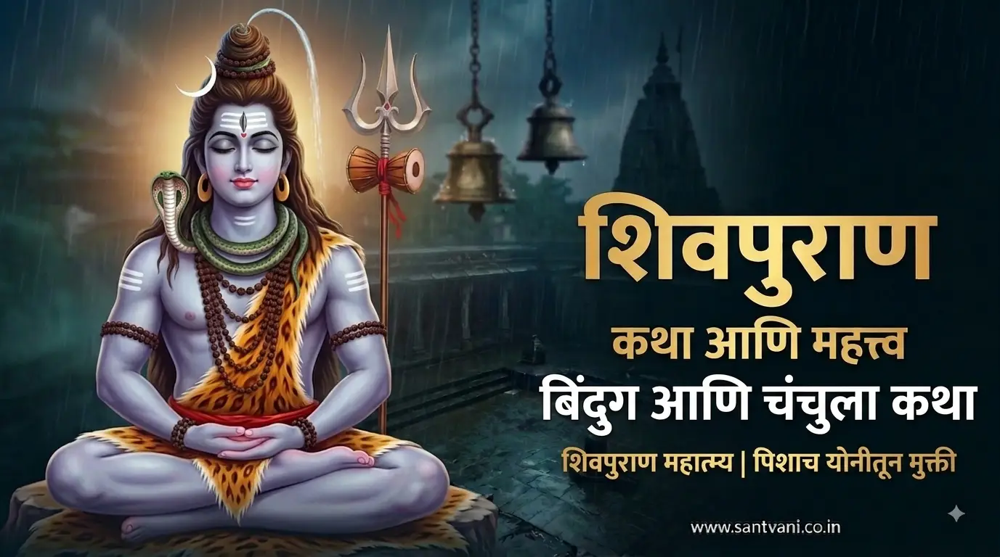
बिंदुग आणि चंचुला कथा – शिवपुराण महात्म्य व पिशाच योनीतून मुक्ती
शिवपुराण कथेच्या अलौकिक श्रवणाने चंचुला आणि तिच्या पती बिंदुगाला पिशाच योनीतून कशी मुक्ती मिळाली याची भावपूर्ण व अद्भुत कथा...
पूर्ण कथा वाचा ➔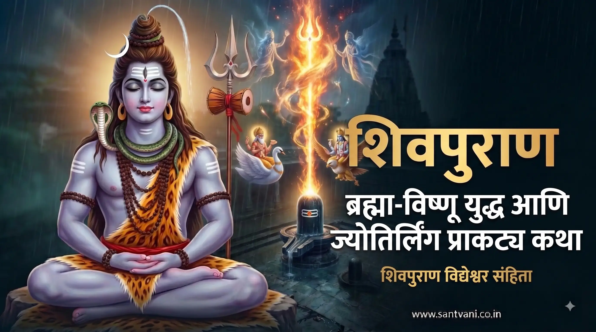
ब्रह्मा-विष्णू युद्ध आणि ज्योतिर्लिंग प्राकट्य कथा – विद्येश्वर संहिता
ब्रह्मादेव आणि भगवान विष्णू यांच्यातील श्रेष्ठत्वाचा वाद अन् त्यातून प्रकट झालेल्या अनंत अग्निस्तंभाची (ज्योतिर्लिंगाची) अलौकिक शिवपुराण कथा...
पूर्ण कथा वाचा ➔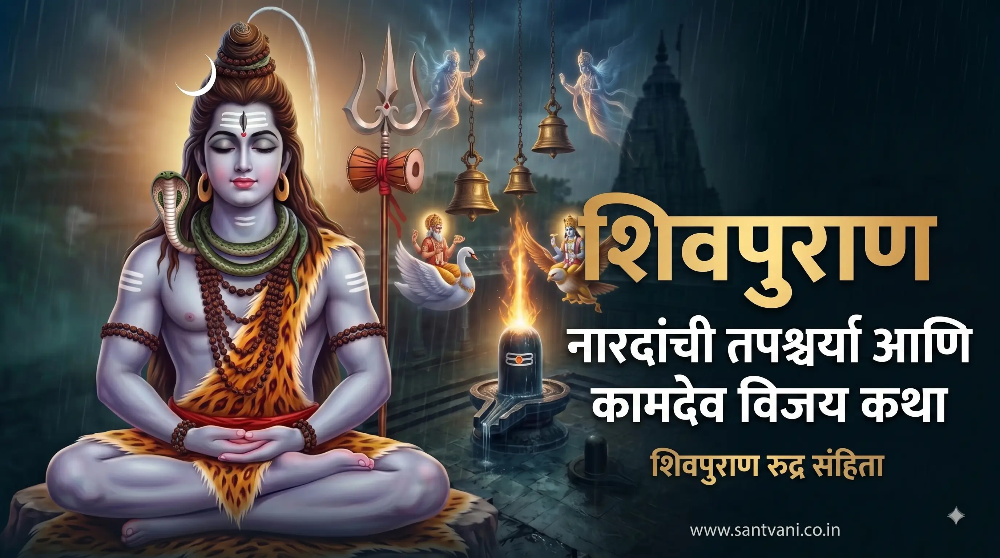
देवर्षी नारद तपस्या आणि कामदेव विजय – अहंकाराची कथा
देवर्षी नारदांची घोर तपस्या, कामदेवाचा पराभव आणि त्यातून नारद मुनींच्या मनात निर्माण झालेल्या अहंकाराची अलौकिक शिवपुराण कथा...
पूर्ण कथा वाचा ➔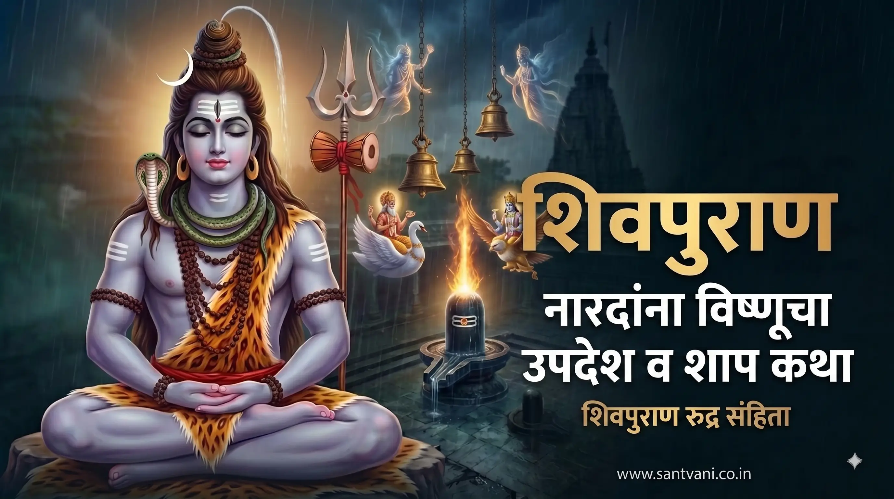
विश्वमोहिनी स्वयंवर, नारद मोह आणि विष्णूंना शाप कथा
भगवान विष्णूंची माया, नारद मुनींना मिळालेले वानराचे रूप आणि रागाच्या भरात त्यांनी श्रीविष्णूंना दिलेल्या शापाची रंजक पौराणिक कथा...
पूर्ण कथा वाचा ➔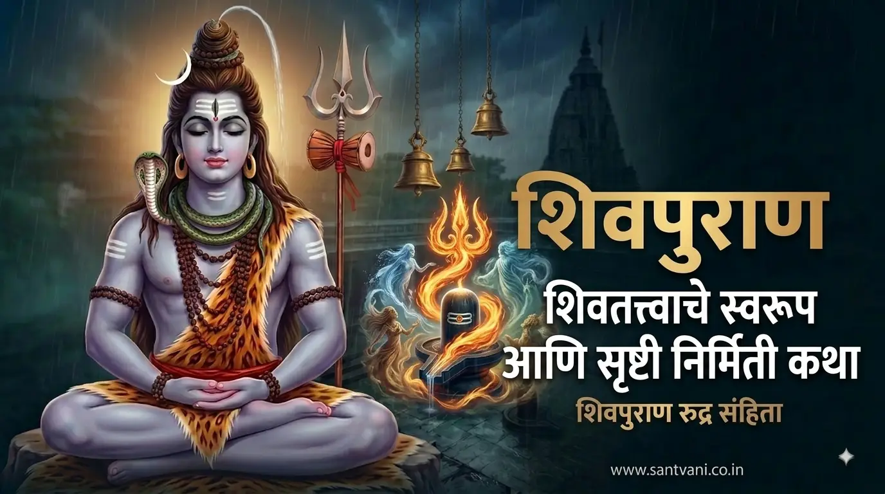
शिवतत्त्वाचे स्वरूप, विष्णू-ब्रह्मा उत्पत्ती आणि सृष्टी निर्मिती कथा
निराकार शिवतत्त्वाचे स्वरूप, भगवान विष्णू व ब्रह्माजींची उत्पत्ती, पंचीकरण सिद्धांत आणि अष्टविध सृष्टी निर्मितीची अलौकिक शिवपुराण कथा...
पूर्ण कथा वाचा ➔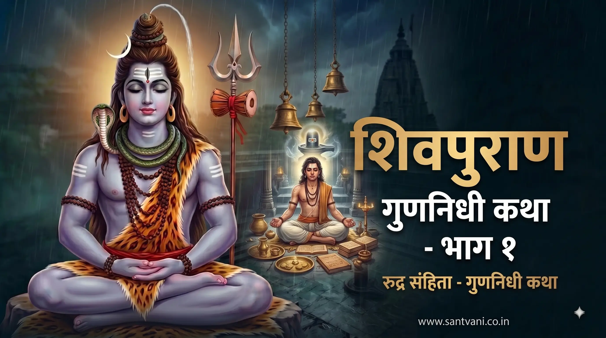
गुणनिधी कथा - शिवपुराण (भाग १)
शिवपुराणातील पूर्वजन्माची अदभुत कथा, गुणनिधीचे जीवन आणि शिवरात्रीच्या दिवशी नकळत घडलेली शिवभक्ती...
पूर्ण कथा वाचा ➔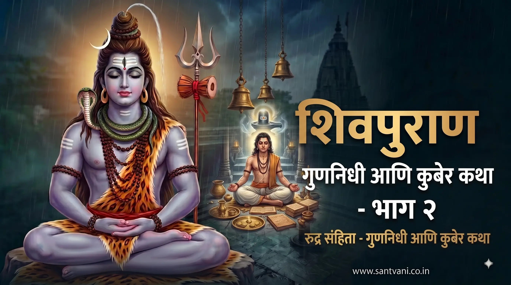
गुणनिधी आणि कुबेर कथा - शिवपुराण (भाग २)
गुणनिधीचा पुढील जन्म, अलौकिक शिवतपस्या आणि भगवान शिवांची कृपा प्राप्त होण्याचा दिव्य प्रवास...
पूर्ण कथा वाचा ➔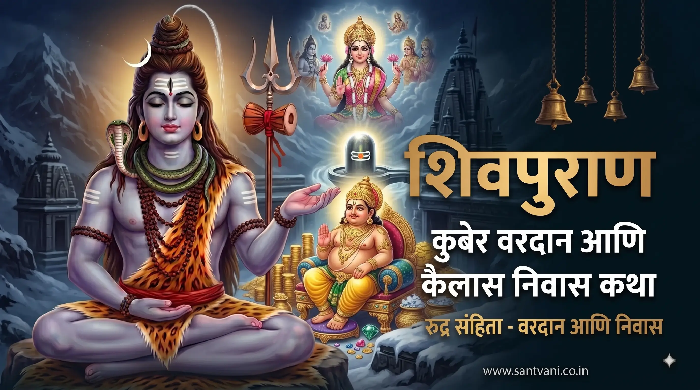
कुबेर वरदान आणि कैलास निवास कथा
भगवान शिवां कडून कुबेराला धनपती होण्याचे वरदान, पार्वती देवींचे दर्शन आणि कैलास पर्वतावरील निवास कथा...
पूर्ण कथा वाचा ➔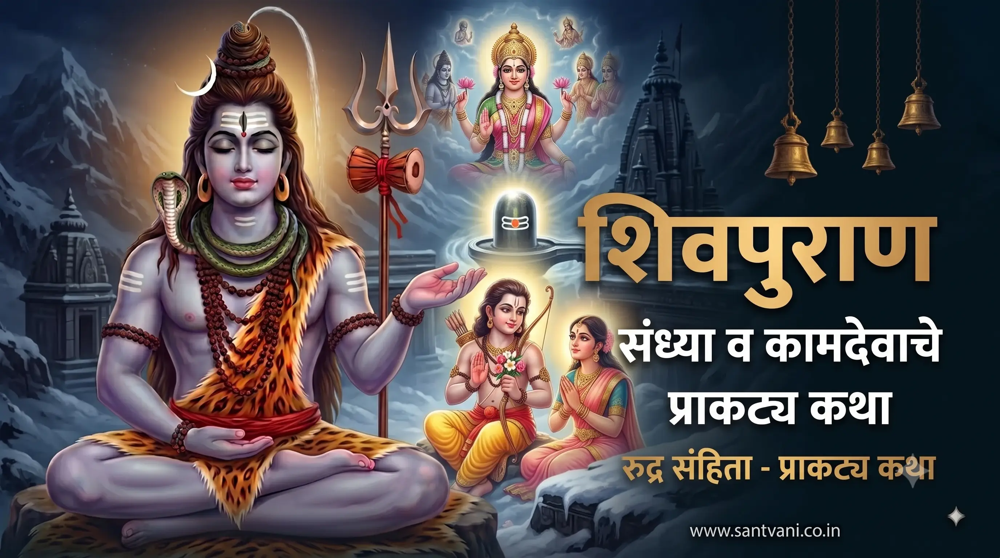
संध्या व कामदेवाचे प्राकट्य कथा
कामदेवाची उत्पत्ती, ५ पुष्पबाणांची परीक्षा, भगवान शंकरांचे प्रकटीकरण, ब्रह्मदेवाचा शाप आणि रती-कामदेव विवाहाची अलौकिक कथा...
पूर्ण कथा वाचा ➔
संध्येचे चरित्र व तपश्चर्या कथा
चंद्रभाग पर्वतावर ४ युगे घोर तपश्चर्या, कामभावाची वैश्विक मर्यादा आणि महादेवांच्या अलौकिक वरदानाची पावन कथा...
पूर्ण कथा वाचा ➔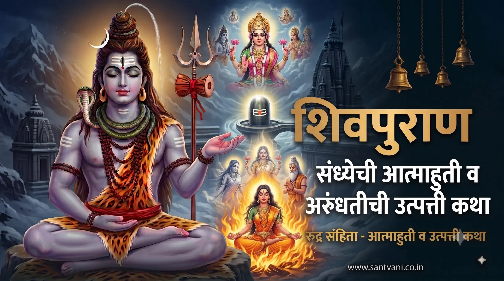
संध्येची आत्माहुती व अरुंधतीची उत्पत्ती कथा
मेधातिथी यज्ञातील आत्माहुती, प्रातःसंध्या-सायंसंध्येची निर्मिती, अरुंधतीचे प्राकट्य आणि महर्षी वशिष्ठ-विवाह कथा...
पूर्ण कथा वाचा ➔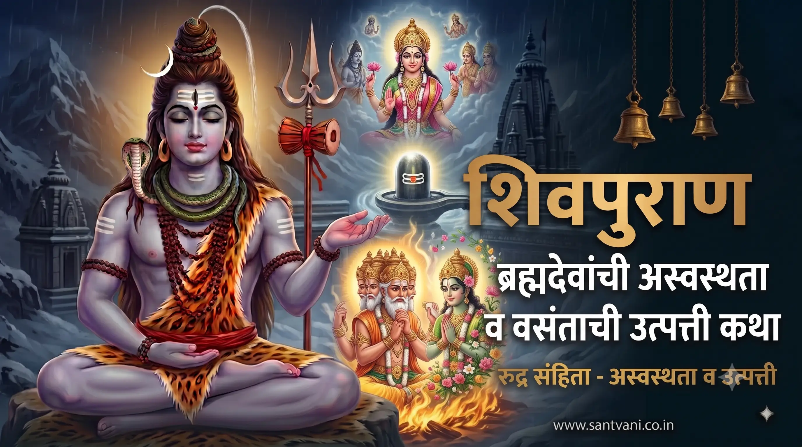
ब्रह्मदेवांची अस्वस्थता व वसंताची उत्पत्ती कथा
ब्रह्मदेवांची अस्वस्थता, वसंत ऋतूची निर्मिती आणि भगवान शिवजींना मोहित करण्याचे केलेले अयशस्वी प्रयत्न...
पूर्ण कथा वाचा ➔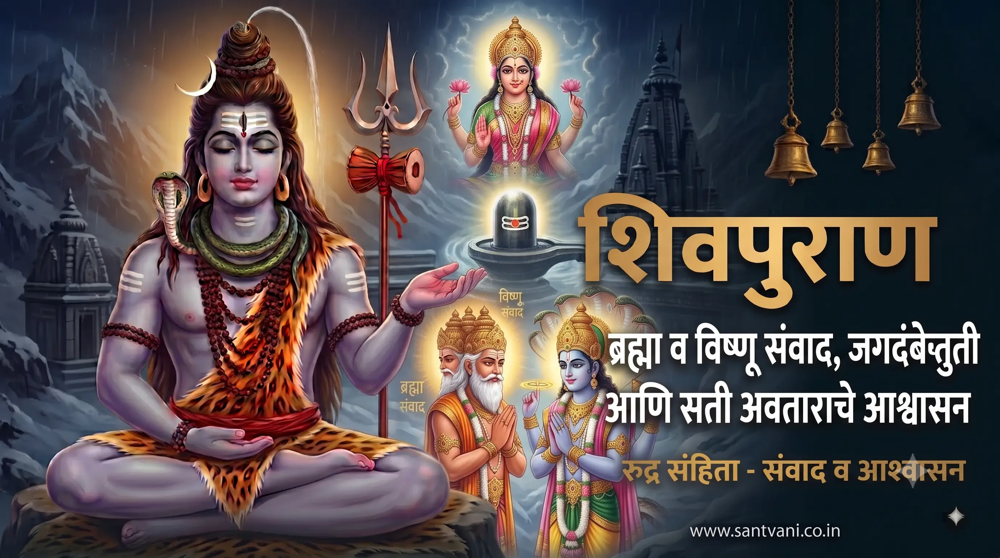
ब्रह्मा व विष्णू संवाद आणि सती अवताराचे आश्वासन
ब्रह्मा व श्रीविष्णूंचा अत्यंत पावन संवाद, श्री जगदंबेची केलेली अलौकिक स्तुती आणि सती अवताराचे मिळालेले आश्वासन...
पूर्ण कथा वाचा ➔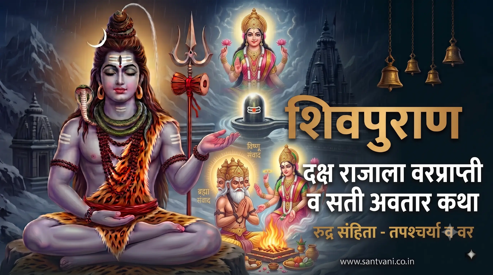
दक्ष राजाला वरप्राप्ती व सती अवतार कथा
दक्ष राजाची घोर तपश्चर्या, जगदंबेचे अलौकिक प्राकट्य, सती अवताराचा वर आणि अनादराचा इशारा...
पूर्ण कथा वाचा ➔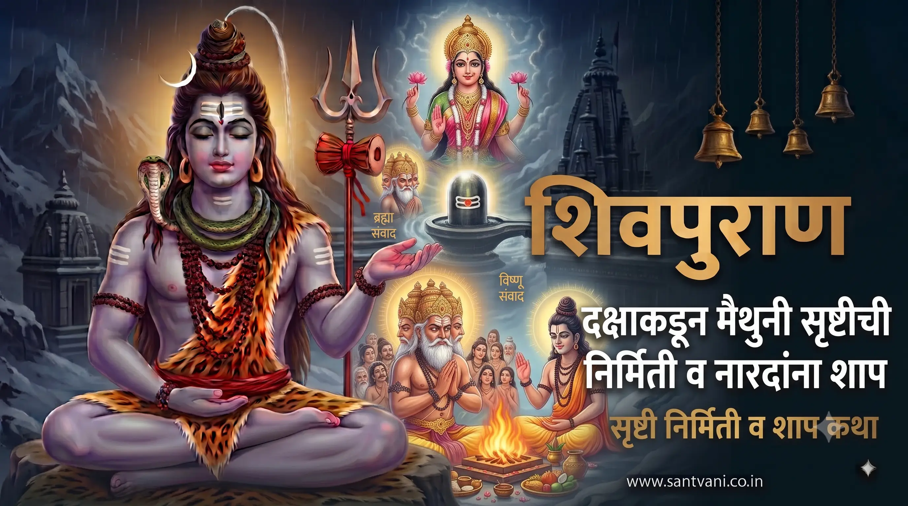
दक्षाकडून मैथुनी सृष्टीची निर्मिती व नारदांना शाप
हर्यश्व व शबलश्रांची निवृत्ती, महर्षी नारदांना मिळालेला शाप आणि ब्रह्मभावाची प्राप्ती कथा...
पूर्ण कथा वाचा ➔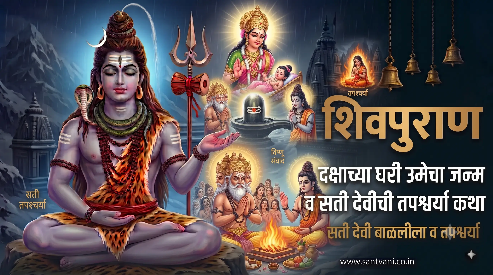
दक्षाच्या घरी उमेचा जन्म व सती देवीची तपश्चर्या कथा
दक्ष प्रजापतीच्या घरी उमेचा जन्म, सती देवीची अलौकिक बाळलीला, घोर तपश्चर्या आणि शिवजींची विवाहासाठी दिलेली संमती...
पूर्ण कथा वाचा ➔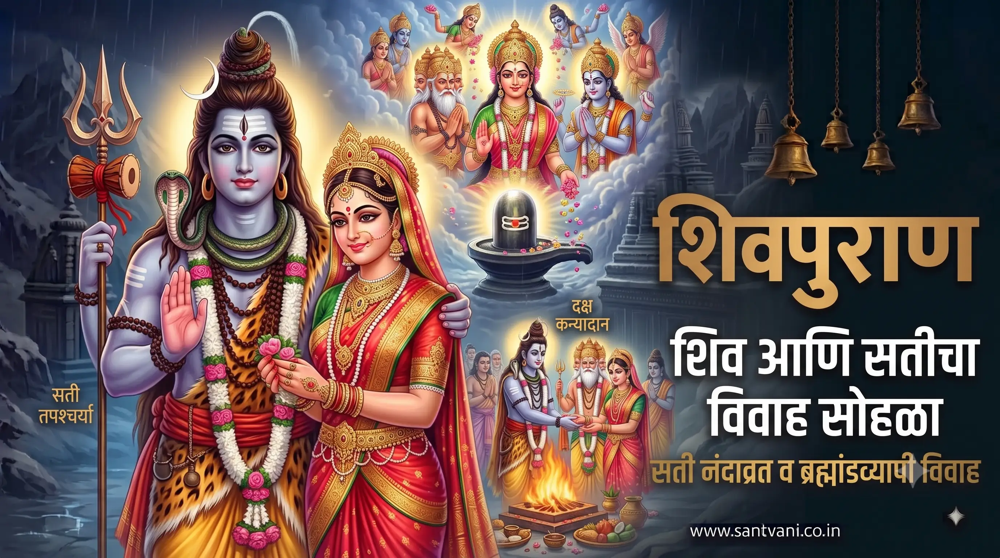
शिव आणि सतीचा विवाह सोहळा
सतीचे नंदाव्रत, शंकराचे प्राकट्य, दक्ष प्रजापतीचे कन्यादान आणि ब्रह्मांडव्यापी अलौकिक विवाह सोहळा...
पूर्ण कथा वाचा ➔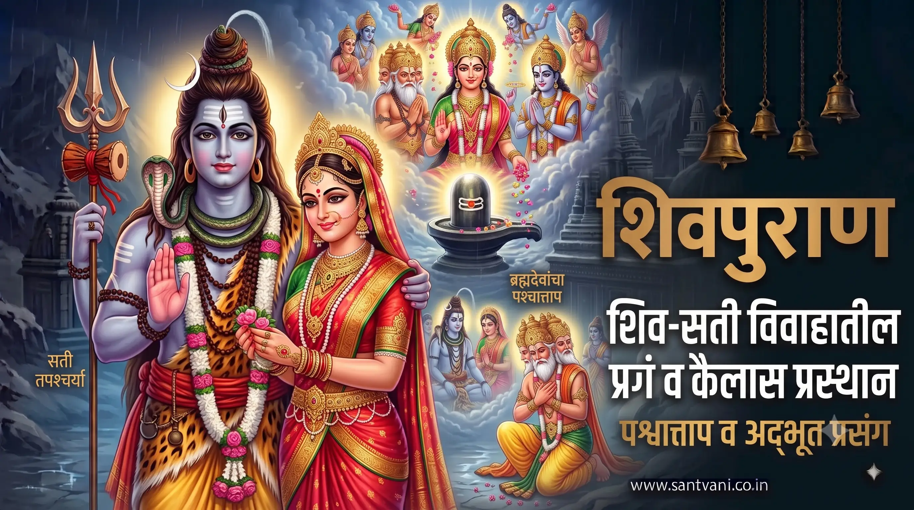
शिव-सती विवाहातील प्रसंग व कैलास प्रस्थान
विवाह सोहळ्यातील अद्भूत प्रसंग, ब्रह्मदेवांचा पश्चात्ताप आणि नवविवाहित शिव-पार्वतीचे कैलासावर प्रस्थान...
पूर्ण कथा वाचा ➔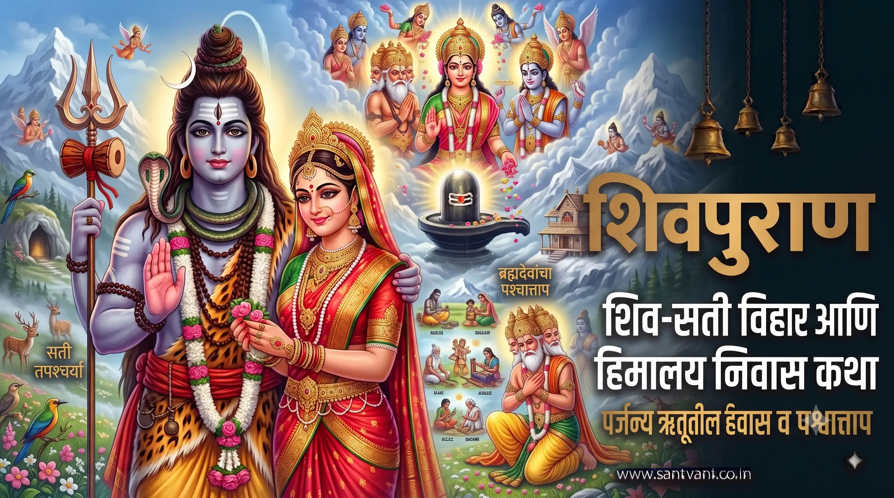
शिव-सती विहार आणि हिमालय निवास कथा
भगवान शिव आणि माता सती यांचा अलौकिक विहार तसेच पर्जन्य ऋतूमधील सुरम्य हिमालय निवास प्रसंग...
पूर्ण कथा वाचा ➔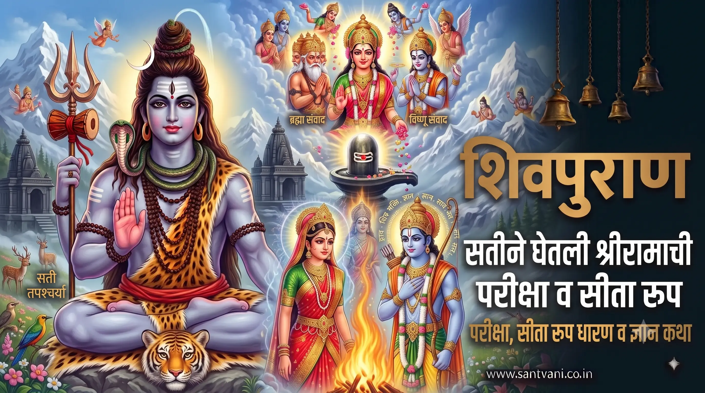
सतीने घेतली श्रीरामाची परीक्षा व सीता रूप
माता सतीने घेतलेली प्रभु श्रीरामांची परीक्षा, सीता रुपात प्राकट्य आणि श्रीरामांचे शिवभक्तिरुप ज्ञान...
पूर्ण कथा वाचा ➔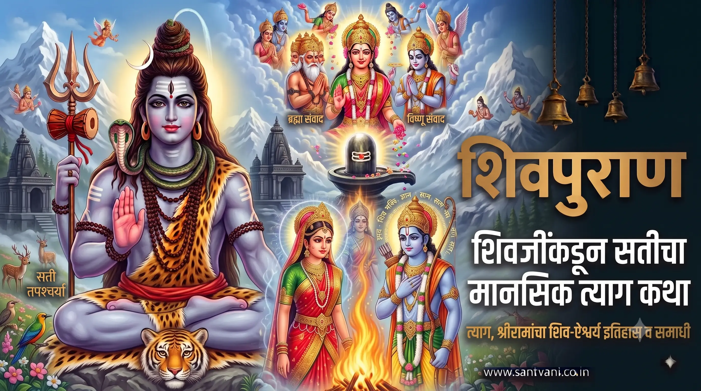
शिवजींकडून सतीचा मानसिक त्याग कथा
महादेवांनी केलेला सतीचा मानसिक त्याग, श्रीरामांचा शिव-ऐश्वर्य इतिहास आणि कैलासावरील अखंड समाधी...
पूर्ण कथा वाचा ➔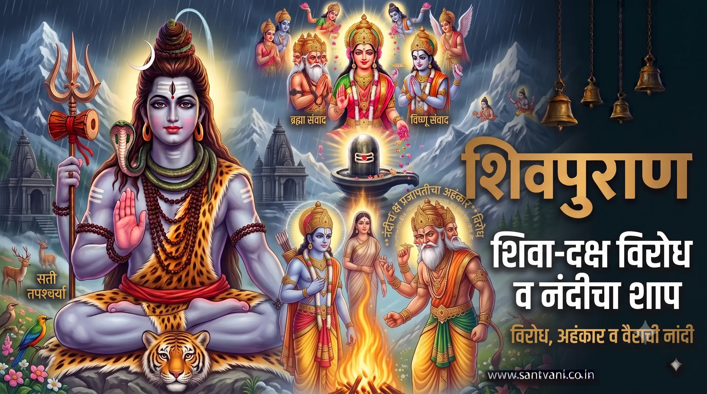
शिवा-दक्ष विरोध व नंदीचा शाप
प्रयाग यज्ञातील प्रसंग, दक्ष प्रजापतीचा अहंकार, नंदीचा शाप आणि शिव-दक्ष वैराची पडलेली नांदी...
पूर्ण कथा वाचा ➔
दक्षाच्या घरी भव्य यज्ञाचे आयोजन
कनखल तीर्थातील भव्य यज्ञ, शिव-सतीचा अनादरपूर्वक केलेला त्याग आणि महर्षी दधिचींचा दक्षाला तीव्र धिक्कार...
पूर्ण कथा वाचा ➔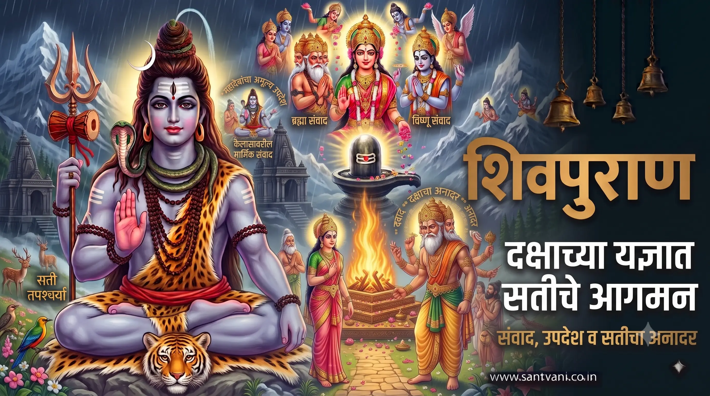
दक्षाच्या यज्ञात सतीचे आगमन
कैलासावरील मार्मिक संवाद, महादेवांचा अमूल्य उपदेश आणि दक्षाच्या यज्ञभूमीत सती देवीचा झालेला अनादर...
पूर्ण कथा वाचा ➔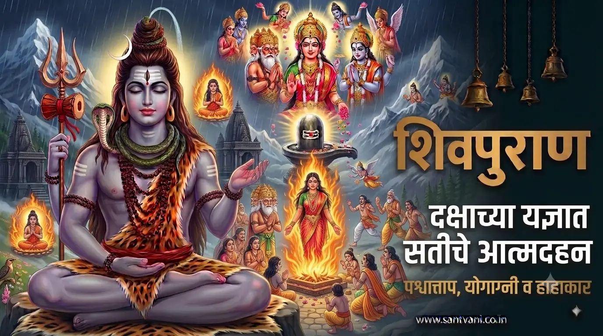
दक्षाच्या यज्ञात सतीचे आत्मदहन
दक्षाची कटू वचने, सतीचा पश्चात्ताप, योगाग्नीत केलेला देहत्याग आणि ब्रह्मांडात माजलेला हाहाकार...
पूर्ण कथा वाचा ➔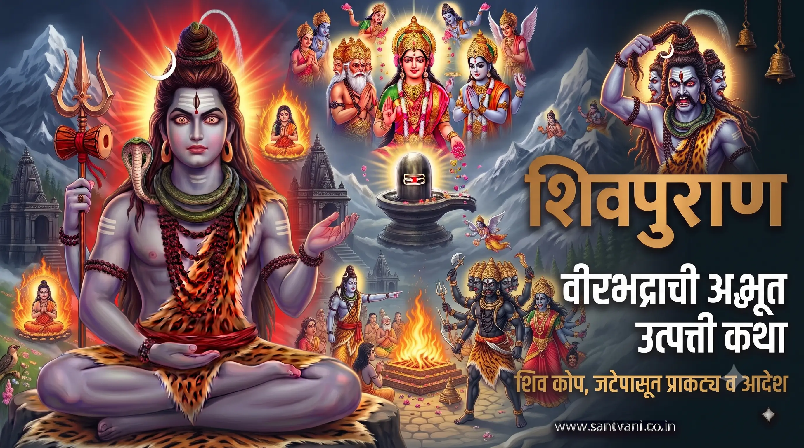
वीरभद्राची अद्भूत उत्पत्ती कथा
शिवजींचा भयंकर कोप, जटेपासून वीरभद्र व महाकालीचे प्राकट्य आणि दक्ष यज्ञ विध्वंसाचा आदेश...
पूर्ण कथा वाचा ➔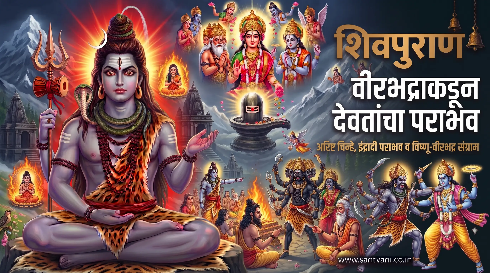
वीरभद्राकडून देवतांचा पराभव
अरिष्ट सूचक चिन्हे, इंद्रादी लोकपालांचा पराभव आणि श्रीविष्णू व वीरभद्र यांच्यातील तुफान संग्राम...
पूर्ण कथा वाचा ➔
वीरभद्राकडून दक्षाचा वध व यज्ञ विनाश
यज्ञाचे मस्तक छिन्न करणे, अहंकारग्रस्त दक्ष प्रजापतीचा वध आणि संपूर्ण यज्ञ भूमीचा विध्वंस...
पूर्ण कथा वाचा ➔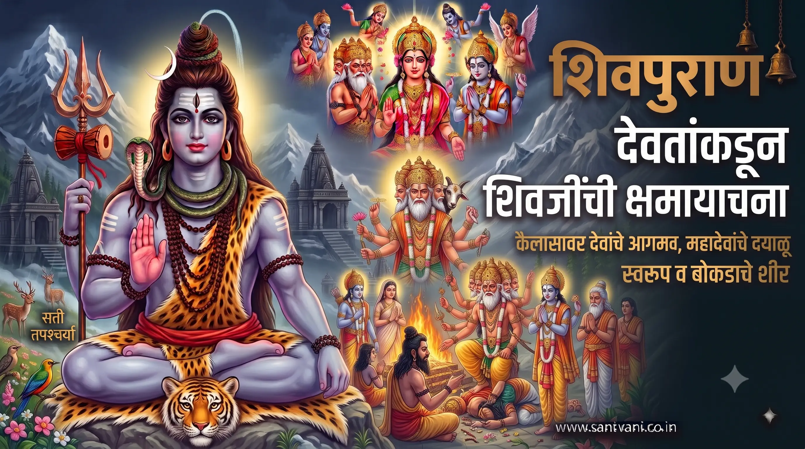
देवतांकडून शिवजींची क्षमायाचना
कैलासावर देवांचे आगमन, महादेवांचे दयाळू स्वरूप आणि दक्षाला बोकडाचे शीर लावून पुनरुज्जीवित करण्याचे वरदान...
पूर्ण कथा वाचा ➔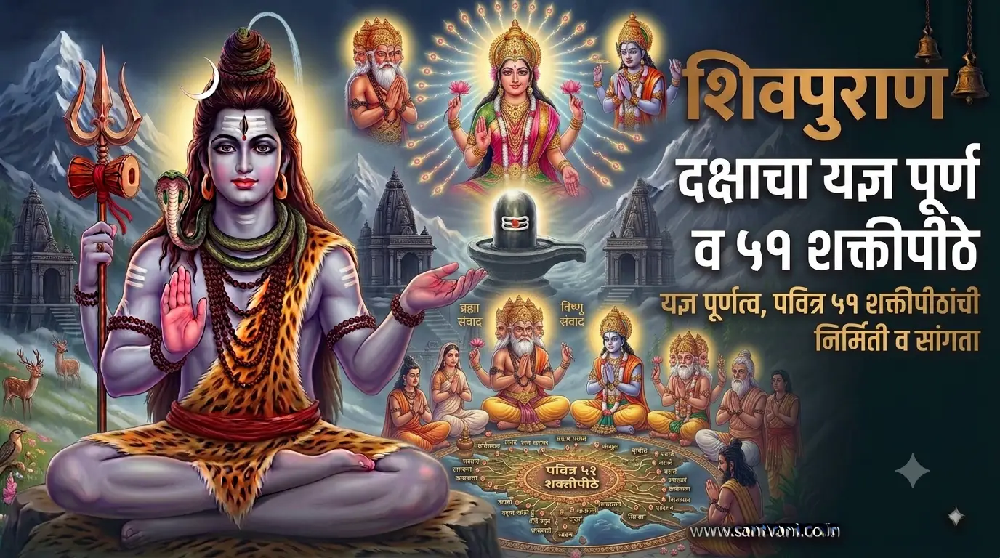
दक्षाचा यज्ञ पूर्ण व ५१ शक्तीपीठे
दक्षाचा यज्ञ पूर्णत्व, पवित्र ५१ शक्तीपीठांची निर्मिती आणि रुद्र संहितेतील सती खंडाची मंगलमय सांगता...
पूर्ण कथा वाचा ➔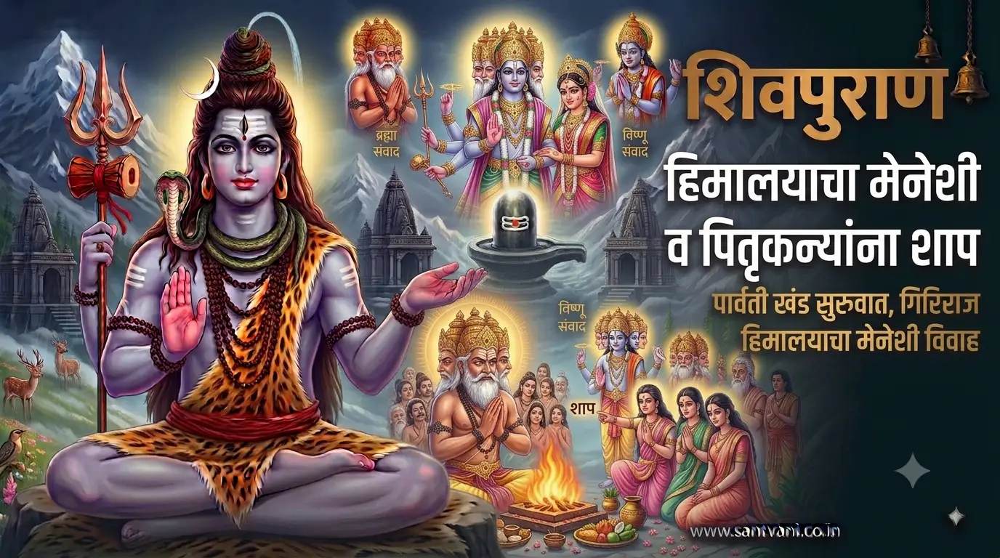
हिमालयाचा मेनेशी विवाह व पितृकन्यांना शाप
पार्वती खंडाची सुरुवात, गिरिराज हिमालयाचा मेनेशी विवाह आणि सनत्कुमारांकडून पितृकन्यांना मिळालेला शाप व उःशाप...
पूर्ण कथा वाचा ➔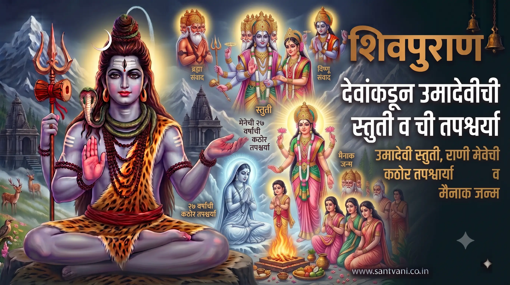
देवांकडून उमादेवीची स्तुती व मेनेची तपश्चर्या
देवतांकडून भगवती उमादेवीची केलेली स्तुती, राणी मेनेची २७ वर्षांची कठोर तपश्चर्या आणि मैनाक जन्माची कथा...
पूर्ण कथा वाचा ➔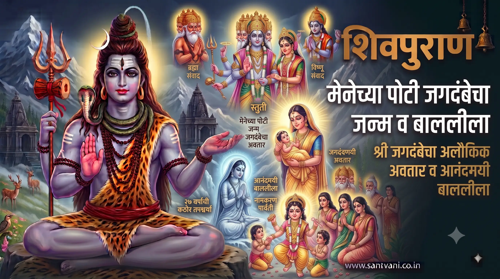
मेनेच्या पोटी जगदंबेचा जन्म व बाललीला
माता मेनेच्या पोटी श्री जगदंबेचा अलौकिक अवतार, तिची आनंदमयी बाललीला आणि 'पार्वती' नामकरण प्रसंग...
पूर्ण कथा वाचा ➔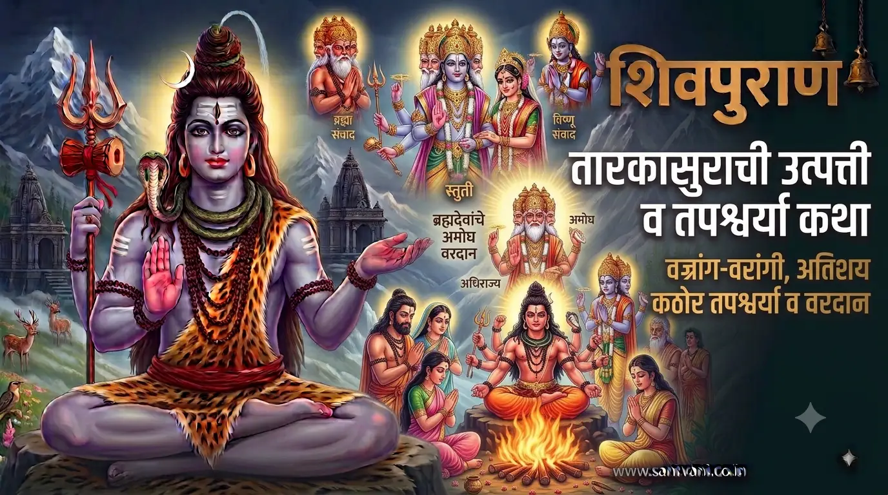
तारकासुराची उत्पत्ती व तपश्चर्या कथा
वज्रांग-वरांगी कथा, तारकासुराची अतिशय कठोर तपश्चर्या, ब्रह्मदेवांचे अमोघ वरदान आणि त्रैलोक्यावरील अधिराज्य...
पूर्ण कथा वाचा ➔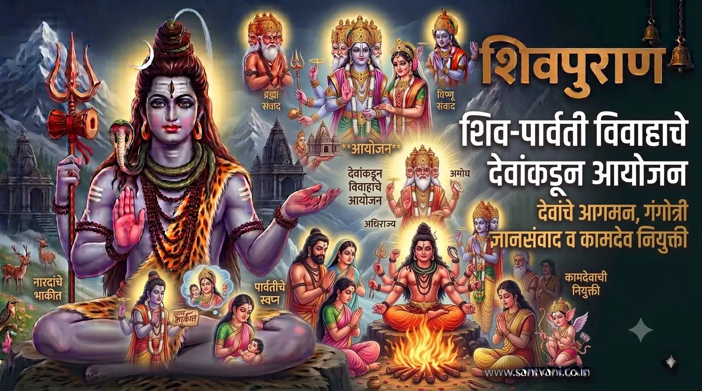
शिव-पार्वती विवाहाचे देवांकडून आयोजन
देवर्षी नारदांचे भाकीत, पार्वतीचे स्वप्न, गंगोत्री तीर्थावरील शिव-पार्वती ज्ञानसंवाद आणि कामदेवाची नियुक्ती...
पूर्ण कथा वाचा ➔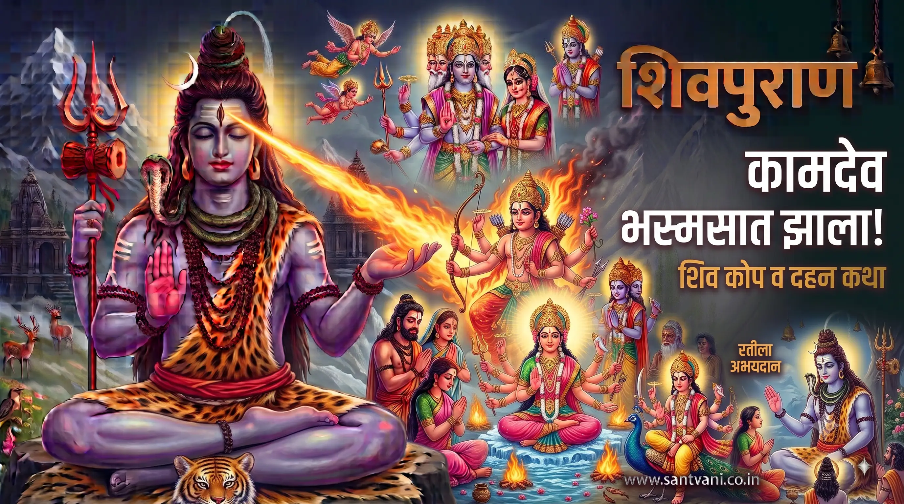
कामदेव भस्मसात झाला! — शिव कोप व दहन कथा
इंद्र योजना, गंगोत्रीवर कामदेवाचे आगमन, शिव समाधीत विघ्न, महादेवांचा कोप, कामदेव दहन आणि रतीला मिळालेले अभयदान...
पूर्ण कथा वाचा ➔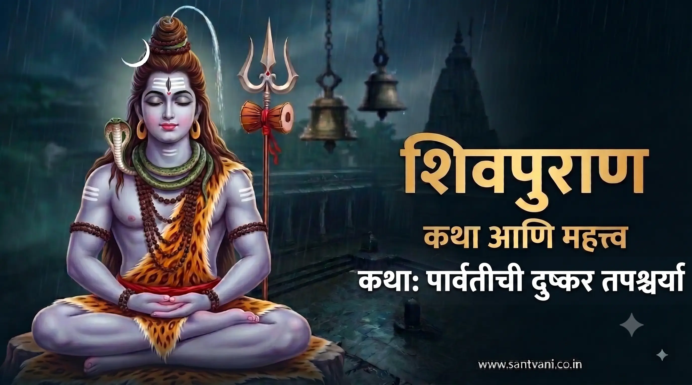
पार्वतीची दुष्कर तपश्चर्या व अपर्णा नामकरण
देवर्षी नारदांचा उपदेश, पंचाक्षर मंत्र साधना, पंचाग्नी व जल तप, अपर्णा नामकरण आणि गौरीशिखर प्राकट्य प्रसंग...
पूर्ण कथा वाचा ➔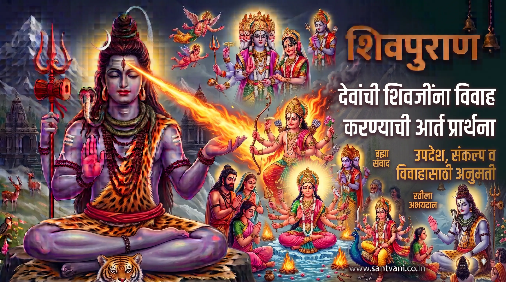
देवांची शिवजींना विवाह करण्याची आर्त प्रार्थना
निष्काम धर्माचा उपदेश, भक्तांच्या इच्छेचा सन्मान, तारकासुर वधाचा संकल्प आणि शिवजींची विवाहासाठी अनुमती...
पूर्ण कथा वाचा ➔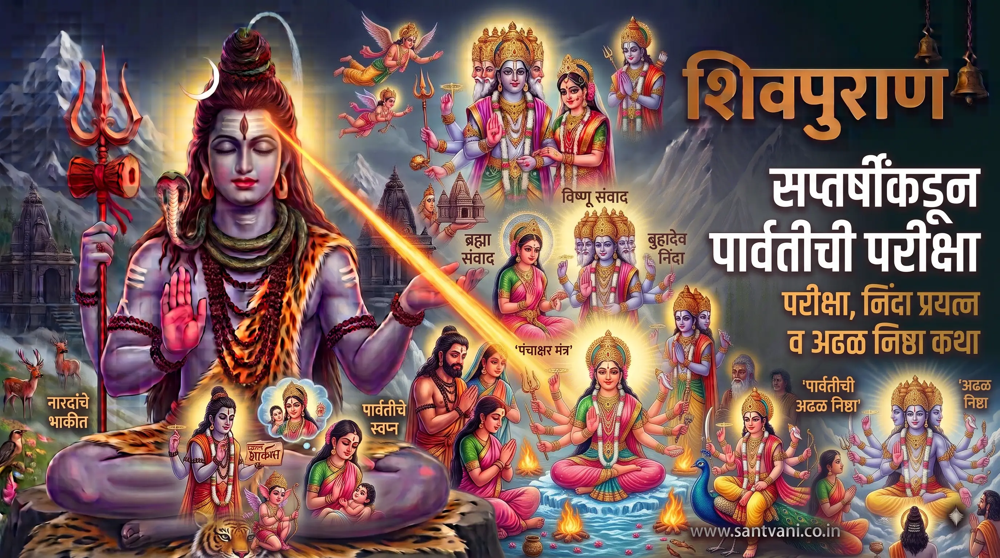
सप्तर्षींकडून पार्वतीची परीक्षा व अढळ निष्ठा
सप्तर्षींचे आगमन, महादेवांच्या निंदेचा बुद्धिभेद प्रयत्न आणि माता पार्वतीचा अढळ शिवसंकल्प व निष्ठा...
पूर्ण कथा वाचा ➔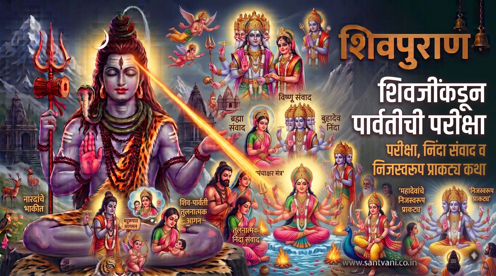
शिवजींकडून पार्वतीची परीक्षा व निजस्वरूप प्राकट्य
वटुरूपात महादेवांचे आगमन, शिव-पार्वती तुलनात्मक निंदा संवाद, अमोल शिवनिश्चय आणि महादेवांचे निजस्वरूप प्राकट्य...
पूर्ण कथा वाचा ➔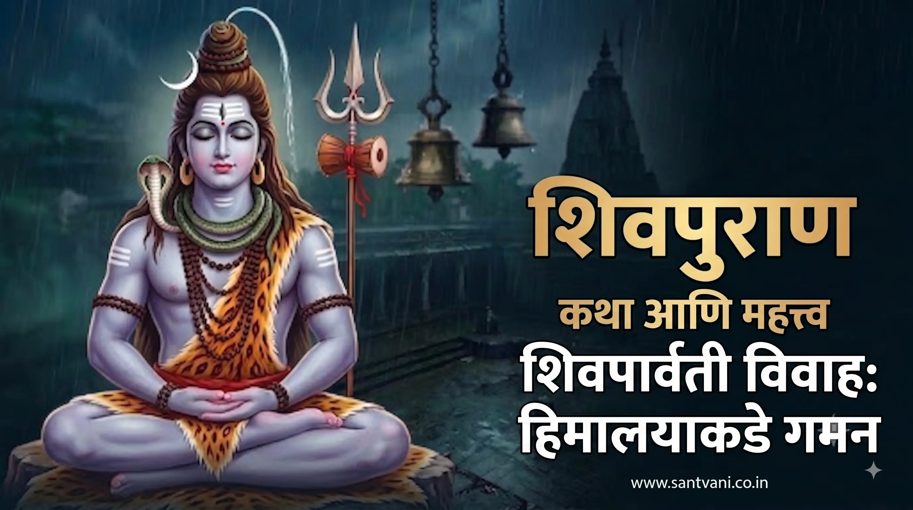
शिवपार्वती विवाहासाठी सर्वांचे हिमालयाकडे गमन
लग्नपत्रिका अर्पण, हिमालयातील भव्य विवाह मंडप रचना, अद्भूत वरातीची तयारी आणि त्रिभुवनाचे आगमन...
पूर्ण कथा वाचा ➔
शिवपार्वती विवाह सोहळा व कन्यादान
वरातीचे आगमन, मेनेचा मोह व विलाप, महादेवांचे अतिसुंदर निजस्वरूप प्राकट्य आणि भव्य कन्यादान सोहळा...
पूर्ण कथा वाचा ➔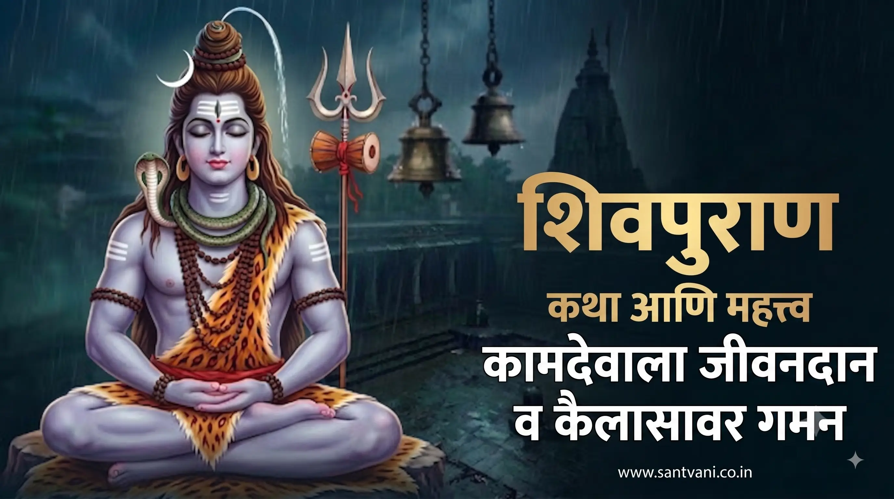
कामदेवाला जीवनदान व कैलासावर गमन
रतीचा विलाप, कामदेवाचे पुनरुज्जीवन, मेना-हिमालयाचा हृदयस्पर्शी निरोप सोहळा आणि पार्वती खंडाची समाप्ती...
पूर्ण कथा वाचा ➔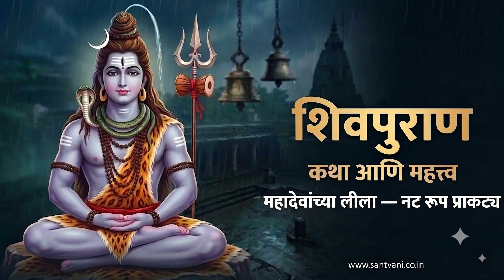
महादेवांच्या लीला — नट रूप प्राकट्य व परीक्षा
पार्वतीचे गृहप्रगमन, शंकरांचे नट रूपात प्राकट्य, विप्र वेषातील शिवनिंदा आणि गिरिराज हिमालयाची घेतलेली अलौकिक परीक्षा...
पूर्ण कथा वाचा ➔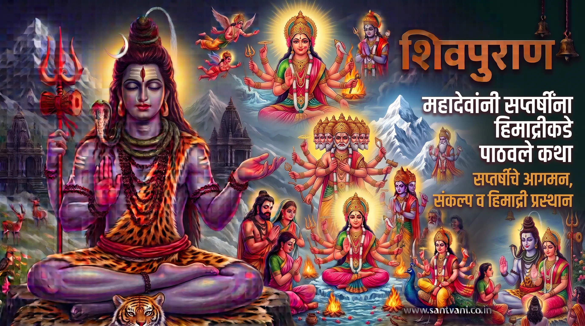
सप्तर्षींचे हिमाद्रीकडे आगमन व विवाह संकल्प
अरुंधतीसह सप्तर्षींचे आगमन, मेना-हिमालयाची समजूत, अनरण्य राजाचा दृष्टांत आणि शिव-पार्वती विवाहाचा दृढ संकल्प...
पूर्ण कथा वाचा ➔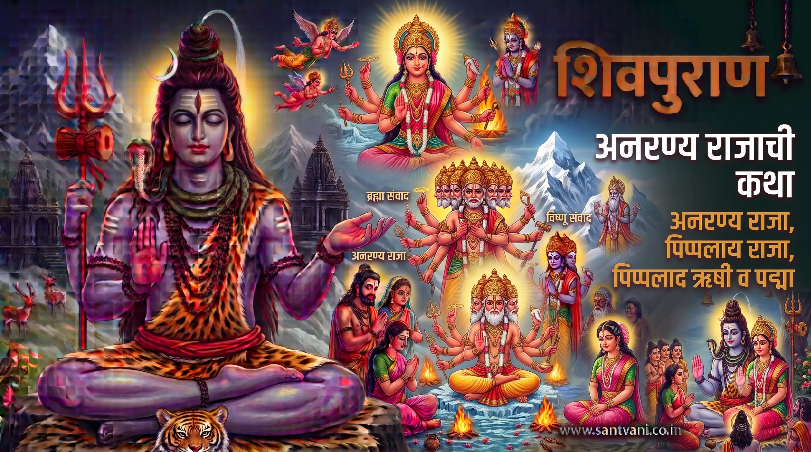
अनरण्य राजा, पिप्पलाद ऋषी आणि पद्मा कथा
चक्रवर्ती अनरण्य राजा, पिप्पलाद ऋषी आणि पद्मा विवाह, पतिव्रता पद्मेचा धर्मराजाला मिळालेला शाप व अभयदान...
पूर्ण कथा वाचा ➔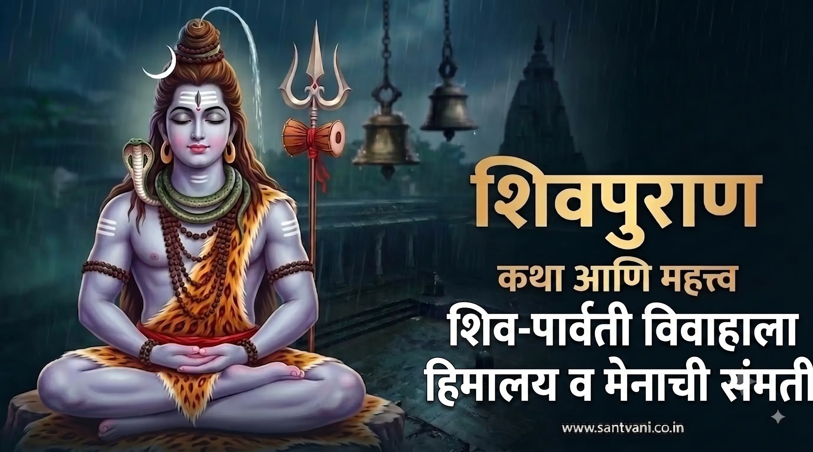
शिव-पार्वती विवाहाला हिमालय व मेनाची संमती
सप्तर्षींचे शुभमुहूर्त मार्गदर्शन, मार्गशीर्ष सोमवारी लग्नाचा मुहूर्त, हिमालयाची संमती आणि कैलासावर आनंदाचे वातावरण...
पूर्ण कथा वाचा ➔श्री महादेव निवडक अभंग – सार्थ मराठी भावार्थासह
विविध महान संतांच्या दृष्टीकोनातून भगवान महादेवांचे (शिवशंभोचे) अलौकिक रूप, महिमा आणि शिव-विष्णू अद्वैत दर्शवणारे निवडक अभंग सविस्तर भावार्थासह...
अभंग व अर्थ वाचा ➔